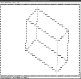

|

|
Programming: Printing a cube on the console, Python, Rotation Matrices, Ascii-Art
What?
This is a small script that will display a cube on the linux terminal. The rotation angles around the x-, y- and z-axis can be set.
The code is a fairly long and contains some redundancy.
- I can think of many way in which I could've reduced the number of for loops for generating the cube.
- Also the coordinates could have been stored in an array directly to avoid translating it from a 3D space of ASCII symbols to do the rotation.
- The sperate array for the cube could have been avoided, if the entire screen would have been rotated and the frame could have been printed onto it later.
- There are even combined rotation matrices for computing all rotations at once.
- in-line lambda functions instead of for loops could have further reduced the code length
But it's easy to read and it works.
When?
Why?
Background?
How?
#########################################################################################
# #
# x #
# xxxxx #
# xx x xxxx #
# xx x xx #
# xx x xxx #
# xx x xxxx #
# xx x xx #
# xxx x xxx #
# x xxx xx xxx #
# x xxxx x xx #
# x xxx xxxx #
# x xxx xxx #
# x x xxxx xxx #
# x x xx xxx #
# x x xxx xxx #
# x x xxx xx x #
# x x xx xx x #
# x x xxxx xxx x #
# x x xx xx x #
# x xx xx xxxxx x #
# x xx xxx x x #
# x xx xxx x x #
# x xx xx x x #
# x xx xxxx x x #
# xxxx xxx x x #
# xxx xxx x x #
# xx xxx x x #
# xxxx xx x #
# xxx xxxx x #
# xx x xxx x #
# xxxx x xx x #
# xxx x xxx #
# xxx x xxx #
# xxxx x xx #
# xx x xx #
# xxxx x xx #
# xxx x xx #
# xxxxx #
# x #
# #
#########################################################################################
1
2
3
4
5
6
7
8
9
10
11
12
13
14
15
16
17
18
19
20
21
22
23
24
25
26
27
28
29
30
31
32
33
34
35
36
37
38
39
40
41
42
43
44
45
46
47
48
49
50
51
52
53
54
55
56
57
58
59
60
61
62
63
64
65
66
67
68
69
70
71
72
73
74
75
76
77
78
79
80
81
82
83
84
85
86
87
88
89
90
91
92
93
94
95
96
97
98
99
100
101
102
103
104
105
106
107
108
109
110
111
112
113
114
115
116
117
118
119
120
121
122
123
124
125
126
127
128
129
130
131
132
133
134
135
136
137
138
139
140
141
142
143
144
145
146
147
148
149
150
151
152 | # dsalzner 2014-12-20-Sa
import sys
import os
import numpy
winkelX = 30.
winkelY = 30.
winkelZ = 20.
# ---- Terminal Groesse bestimmen
h, b = os.popen('stty size', 'r').read().split()
hoehe = int(h) - 1
breite = int(b)
# ---- Ausgabespeicher reservieren
s = [[" " for i in range(hoehe)] for j in range(breite)]
# ---- Rahmen einblenden
for x in range(0, breite):
s[x][0] = "#"
s[x][hoehe - 1] = "#"
for y in range(0, hoehe):
s[0][y] = "#"
s[breite - 1][y] = "#"
# --- Wuerfelspeicher reservieren
tiefe = breite
wh = int(hoehe / 2)
wb = int(breite / 2)
wt = wh
wpx = int(breite / 2 - wb / 2)
wpy = int(hoehe / 2 - wh / 2)
wpz = wpx
w = [[[0 for k in xrange(tiefe)] for j in xrange(hoehe)] for i in xrange(breite)]
# --- Wuerfel in Sicht von vorne
# -- vorne
# - vorne, oben
for x in range(0, wb):
w[wpx+x][wpy+0][wpz+0] = "x"
# - vorne, unten
for x in range(0, wb):
w[wpx+x][wpy+wh-1][wpz+0] = "x"
# - vorne, links
for y in range(0, wh):
w[wpx+0][wpy+y][wpz+0] = "x"
# - vorne, rechts
for y in range(0, wh):
w[wpx+wb-1][wpy+y][wpz+0] = "x"
# -- hinten
# - hinten, oben
for x in range(0, wb):
w[wpx+x][wpy+0][wpz+wt-1] = "x"
# - hinten, unten
for x in range(0, wb):
w[wpx+x][wpy+wh-1][wpz+wt-1] = "x"
# - hinten, links
for y in range(0, wh):
w[wpx+0][wpy+y][wpz+wt-1] = "x"
# - hinten, rechts
for y in range(0, wh):
w[wpx+wb-1][wpy+y][wpz+wt-1] = "x"
# -- seite links
# - seite links, oben
for z in range(0, wt-1):
w[wpx+0][wpy+0][wpz+z] = "x"
# - seite links, unten
for z in range(0, wt):
w[wpx+0][wpy+wh-1][wpz+z] = "x"
# -- seite rechts
# - seite rechts, oben
for z in range(0, wt):
w[wpx+wb-1][wpy+0][wpz+z] = "x"
# - seite rechts, unten
for z in range(0, wt):
w[wpx+wb-1][wpy+wh-1][wpz+z] = "x"
# --- Liste aus Koordinaten bauen
ww = []
for wy in range(0, hoehe):
for wx in range(0, breite):
for wz in range(0, tiefe):
if w[wx][wy][wz] == "x":
ww.append([wx, wy, wz])
# --- Rotationsmatrix
# -- Rotation um x Achse
angle = winkelX
theta = (angle/180.) * numpy.pi
rotX = numpy.array( [
[1, 0, 0],
[0, numpy.cos(theta), -numpy.sin(theta)],
[0, numpy.sin(theta), numpy.cos(theta)]
]
)
wrot = numpy.transpose(numpy.dot(rotX, numpy.transpose(ww)))
# -- Rotation um y Achse
angle = winkelY
theta = (angle/180.) * numpy.pi
rotY = numpy.array( [
[numpy.cos(theta), 0, numpy.sin(theta)],
[0, 1, 0],
[-numpy.sin(theta), 0, numpy.cos(theta)]
]
)
wrot = numpy.transpose(numpy.dot(rotY, numpy.transpose(wrot)))
# -- Rotation um z Achse
angle = winkelZ
theta = (angle/180.) * numpy.pi
rotZ = numpy.array( [
[numpy.cos(theta), -numpy.sin(theta), 0],
[numpy.sin(theta), numpy.cos(theta), 0],
[0, 0, 1]
]
)
wrot = numpy.transpose(numpy.dot(rotZ, numpy.transpose(wrot)))
# --- Koordinatenliste zurueck
w = [[[0 for k in xrange(tiefe)] for j in xrange(hoehe)] for i in xrange(breite)]
for p in wrot:
if int(p[0]) < breite - 1:
if int(p[1]) < hoehe - 1:
if int(p[2]) < tiefe - 1:
w[int(p[0])][int(p[1])][int(p[2])] = "x"
# --- Wuerfel in die Ausgabe
for wy in range(0, hoehe):
for wx in range(0, breite):
for wz in range(0, tiefe):
v = w[wx][wy][wz]
if v == "x":
s[wx][wy] = "x"
# --- Ausgabe
sys.stdout.flush()
for y in range(0, hoehe):
for x in range(0, breite):
sys.stdout.write(s[x][y])
sys.stdout.write("\n")
sys.stdout.flush()
sys.exit(0)
|
Progress?
|